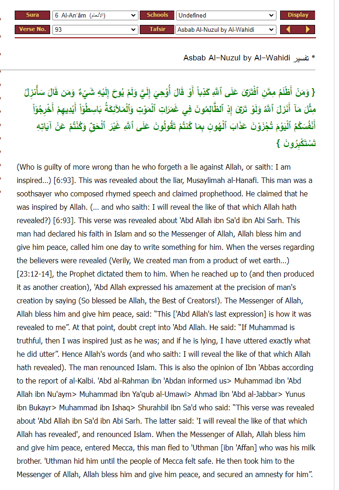

In many reports in tafsir they tell this story Abdullah bin-sarh main reason for apostasy was this he
created a verse of the Quran specifically Quran 23:14
However all of these report are forged why all of them come from someone called Al-Kalbi (no not u David)
is he weak
Translation: “al-kalbi and ibn al-kalbi are rawafids matrook al-hadith”
-Source: syaar aalam al-nubala volume 10 page number 101 to page number 102 this is page 101 person
number 3 by name “Ibn Al-Kalbi””
His story of apostasizing is true But no authentic basis of his apostasy with creation of the verse
The important part because he came back is it true that the prophet forced him to comeback by the sword?
Translation: “Abdullah bin Sarh last moments were duaa in fajr with prayer”
-Source: Al-baghawy mu’jam al-sahaba volume 4 page number 18 to page number 19 narration number 2418
Grade: Sahih (authentic) (Darussalam)
He passed away after the prophet and the 1st three caliphs and like 50% of the sahaba Why would his
last non forced moments be praying This alone refutes their whole arguemnt/story
And may Gods peace and blessings be upon Farid responds Helpful video on this:
https://m.youtube.com/watch?v=TXVlaP6oD7k

This narration is weak because it's from Al-Kalbi. Who is Al-Kalbi?
Al-Kalbi, also known as Muhammad ibn as-Sa’ib al-Kalbi, was one of the most notorious liars of Kufah.
His biography in al-Mizzi’s Tahdhib al-Kamal is filled with statements of the ‘ulama of his time who
denounced him as an extremely unreliable reporter, and even a blatant liar. (See al-Mizzi,
Tahdhib al-Kamal vol. 25 pp. 246-253)
The Book: https://ia802306.us.archive.org/18/items/FP15392/tkar25.pdf
Scans:
Translation:
Abu Bakr bin Khallad Al-Bahili said, on the authority of Mu`tamir bin Suleiman, on the authority of
his father: There were two liars in Kufa, one of whom was Al-Kalbi.
And Amr bin Al-Husain said, on the authority of Mu'tamir bin Suleiman, on the authority of
Laith bin Abi Sulaym: In Kufa, two liars: Al-Kalbi and Al-Suddi, meaning Muhammad bin Marwan.
Source: Tahdhib al-Kamal vol. 25 pp. 248
Translation:
Al-Za'idah said: "There are three people who I will not narrate anything from, Ibn Abu Laila,
Jabir Al-Ju'fi, and Al-Kalbi...As for al-Kalbi, I used to disagree with him, then I heard him say one day,
'I fell sick with a disease and forgot what I had memorized, so I came to the family of Muhammad and
they spit in me, and I remembered what I had forgotten.' Due to this, I (Al-Za'idah) said:
'I swear to God, I will not narrate anything from you,' so I left him."
Abu Awana said: I heard al-Kalbi narrate something that was kufr, and when I spoke to him and asked
him about it, he denied ever saying it.
Abu Amr ibn al-Ala said: I bear witness that al-Kalbi is a kafir.
Source: Tahdhib al-Kamal vol. 25 pp. 249
What we learn from this scan, is that Al-Kalbi isn't only a liar who denies the kufr that he utters
(which there's eye witnesses for), he's also crazy as well. How do you all of a sudden lose
all your memory, but when you go to the family of Muhammad peace be upon him, and they spit at you,
that's when you get all your memory back. Bruh what? From this it's quite obvious that
Al-Kalbi is majnoon (crazy) and a kadhab (liar)
Summary of the translation:
Sufyan Al-Thawri says that Al-Kalbi said, 'Whatever I narrate from Abu Salih from Ibn Abbas, is a lie.'
So here, you have Al-Kalbi himself admitting that he lied regarding this narration.
Source: Tahdhib al-Kamal vol. 25 pp. 250
Translation:
Al-Asma’i said, on the authority of Qara bin Khalid, "They believed that Al-Kalbi is lying."
Ahmed bin Sinan Al-Qattan Al-Wasiti said, on the authority of Yazid bin Harun, "Al-Kalbi grew old
and was overcome by forgetfulness..."
Abu Hatim said, "there's a consensus to rejecting the narrations of Al-Kalbi."
An-Nisaai said, "He is not trustworthy and he doesn't write his hadiths."
Source: Tahdhib al-Kamal vol. 25 pp. 251
https://discover-the-truth.com/2015/03/24/abdullah-ibn-saad-ibn-abi-sarh-apostasy-or-murder/https://www.ebnmaryam.com/vb/showthread.php?t=233620
What does it mean for him to have ‘created the verse’?
It is mentioned in this report that as the prophet was reciting 23:14, and Abdullah bin Sarh was scribing
it down, before the prophet even mentioned the last part of the verse, ie not a single person knew
about it other than those under the divine decree, Abdullah Bin Sarh himself uttered these last few words
"فتبارك الله احسن الخالقين”
Before the prophet had even said them. To this, the prophet said that this
indeed is the last part of this ayah.
This supposedly caused turmoil within Abdullah Bin Sarh; that he uttered these words of his own
volition and not from what the prophet had told him, but here was the prophet affirming that this
was truly and genuinely the last part of the verse? Does this mean the prophet was just making up
the verse as they were going along, because these words uttered on instinct and spontaneity by a
mere man, are what the prophet says is indeed the true ending of this ayah? If this is the case,
then surely that means he is a false prophet reciting scripture which he falsely attributes to the
divine, right?
Before we even establish why this narration is absolutely unreliable anyway, let’s make something
clear from the get-go: even if this narration were to be true, where exactly does the problem lie
in this particular instance?
Look at the rest of verse
What does it mean for him to have ‘created the verse’?
It is mentioned in this report that as the prophet was reciting 23:14, and Abdullah bin Sarh was
scribing it down, before the prophet even mentioned the last part of the verse, ie not a single
person knew about it other than those under the divine decree, Abdullah Bin Sarh himself uttered
these last few words
"فتبارك الله احسن الخالقين”
Before the prophet had even said them. To this, the prophet said that this indeed is the last part
of this ayah.
This supposedly caused turmoil within Abdullah Bin Sarh; that he uttered these words of his own volition
and not from what the prophet had told him, but here was the prophet affirming that this was truly
and genuinely the last part of the verse? Does this mean the prophet was just making up the verse as
they were going along, because these words uttered on instinct and spontaneity by a mere man, are what
the prophet says is indeed the true ending of this ayah? If this is the case, then surely that means
he is a false prophet reciting scripture which he falsely attributes to the divine, right?
Before we even establish why this narration is absolutely unreliable anyway, let’s make something
clear from the get-go: even if this narration were to be true, where exactly does the problem lie
in this particular instance?
Look at the rest of verse
Surah Al-Muminoon (The Believers)
23:14
then We made that drop into a clinging form, and We made that form into a lump of flesh, and We made
that lump into bones, and We clothed those bones with flesh, and later We made him into other
forms––glory be to God, the best of creators!––
Translation: Abdul Haleem | Meccan
Allah is explicitly describing such accurately defined phases of embryology which no doubt would
herald a ‘subhanallah’ or a ‘wow’ or a ‘isn’t Allah the best of creators!’
It is not so mind boggling that an expression of awe pertaining to praise of the creator in question
used when hearing such magnificent descriptions of creation is verbatim to the end of the ayah which,
as typical, is a glorification of the creator.
And as with the majority of verses that depict such explicit portrayals of science and morphology
They typically end with a glorification of allah as the zenith of all creators
So why is it so supposedly Infeasible that as Abdullah bin Sarh was listening to the prophet recite
this ayah, out of awe, he wouldn’t have been able to say ‘glory to Allah best of all creators’
Just like it comes in other verses?
Why is it so out of scope that Abdullah bin Sarh wouldn’t have said this just like when someone is
reading something extraordinary and they say ‘subhanallah’ out of habit or if someone is reciting a
quote to you, you naturally finish it off saying it along with them?
Regardless, that is just something to provoke thought. Looking at things with a rational mindset,
looking at things holistically, and looking at things as they pertain to actual worldly life and
expression and emotion, takes one a long way when trying to reconcile a supposed issue within these
scriptures
The following is the translation of Baidawî's report proposed by the critic:
'To me it has been revealed', when naught has been revealed to him" refers to
'Abdullah Ibn Sâd Ibn Abi Sarh, who used to write for God's messenger. The verse (23:12) that says,
"We created man of an extraction of clay" was revealed, and when Muhammad reached the part that says,
"... thereafter We produced him as another creature (23:14), 'Abdullah said, "So blessed be God the
fairest of creators!" in amazement at the details of man's creation. The Prophet said, "Write it down;
for thus it has been revealed." 'Abdullah doubted and said, "If Muhammad is truthful then
I receive the revelation as much as he does, and if he is a liar, what I said is a good as what he said."
The above claim can be summed up as follows: cAbdullâh was one of the scribes of the Prophet(P).
Upon the revelation of the verse 23:12 and his anticipation on the end of the verse 23:14,
he thought that he received the revelation as much as the Prophet(P) and he doubted in the prophethood of
Prophet Muhammad(P).